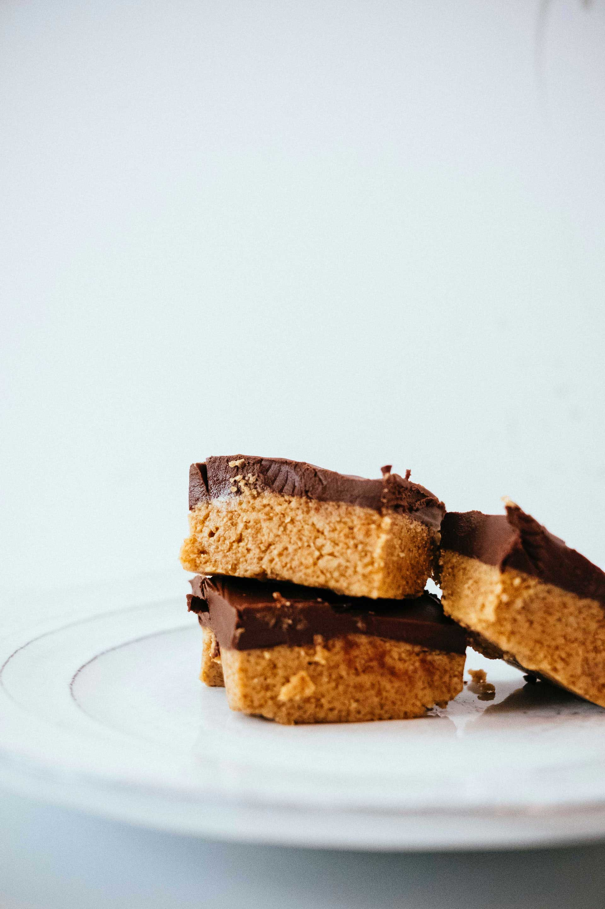

Peanut Butter Fudge Bars
An Ooey Gooey Classic From My Family To Yours

Ingredients
Peanut Butter Cookie Dough:
- 1 ½ cups butter, softened
- 1 ½ cups granulated sugar
- 1 ½ cups brown sugar
- 3 large eggs
- 1 teaspoon vanilla extract
- 1 ½ cups creamy peanut butter
- 4 ½ cups flour
- 1 tablespoon baking soda
- ¾ teaspoon salt
Fudge:
- 1 (14-ounce) can sweetened condensed milk
- 2 tablespoons butter
- Pinch of salt
- 2 cups chocolate chips
- 1 teaspoon vanilla extract
INSTRUCTIONS
- Preheat the oven to 350 degrees. Lightly grease a large, rimmed baking sheet (about 9X13in) with nonstick cooking spray
- For the peanut butter cookie dough, in a large bowl, cream together the butter, granulated sugar and brown sugar until light and creamy, (1-2 minutes with electric mixer, 10-15 minutes by hand). Add the eggs and vanilla and mix, scraping down the sides of the bowl as needed.
- Add the peanut butter and mix until combined. Stir in the dry ingredients until no dry streaks remain.
- Reserve about 2 1/2 cups of the dough (20-25 ounces) and set aside. Press the rest of the cookie dough in the bottom and into the corners of the prepared pan.
- For the fudge, in a microwave-safe bowl, combine the sweetened condensed milk, butter, salt, chocolate chips and vanilla. Use 1-minute increments, stirring in between, until the mixture is melted and creamy.
- Pour the fudge filling over the cookie dough layer and spread evenly with a spatula or large spoon.
- Crumble the remaining cookie dough over the top in small pieces.
- Bake the bars for 15 minutes, or until golden brown. Let the bars cool completely before slicing and serving. The bars can be cut and stored in the refrigerator, well-covered, for several days or frozen for several months.